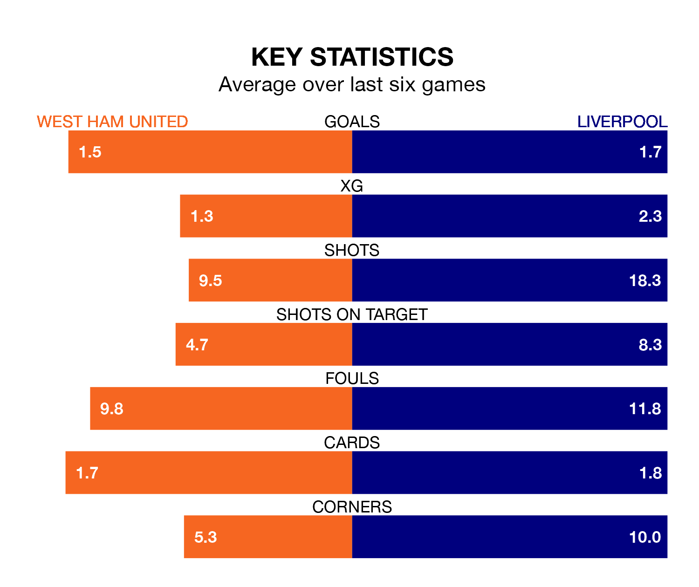

Liverpool travel to the London Stadium for Saturday lunchtime's match against West Ham United looking to bounce back from defeat last time out in the Premier League.
The Reds, who sit third in the league after 34 games, fell to a 2-0 away defeat to Everton on Wednesday.
They face a West Ham side who also lost their last match, a 5-2 defeat to Crystal Palace, and who sit eighth in the table.
With 75 goals in 34 games so far this season, Liverpool are the league's third-highest scorers with 2.2 goals per game. And they are conceding fewer than average, letting in 34 goals at a rate of 1.0 per game.
West Ham, meanwhile, are average scorers, with 1.6 goals per game. They have conceded 1.9 goals per game.
In the last 10 years, West Ham and Liverpool have played each other on 22 occasions. West Ham won five of them, Liverpool 14, and they drew three times.
On average, the Hammers scored 1.1 goals and the Reds 2.1 in those matches.
Their last meeting was on December 20, when Liverpool won 5-1 at home.
United are in disappointing form in the Premier League, with one win and two draws from their last six games.
With three wins and a draw over that period, the Reds' form is better – they have taken 10 points from 18, compared to the Hammers' five.
In Mohamed Salah, the away side have one of the league's sharpest shooters so far this season. He has notched 17 goals in 28 appearances, to sit fifth in the scoring charts.
His goal rate of one every 133 minutes is quicker than that of Jarrod Bowen, the hosts' top scorer with a goal every 183 minutes, and a total of 15 goals in 31 games.
Updated: 07:59 (UTC), 26/04/24